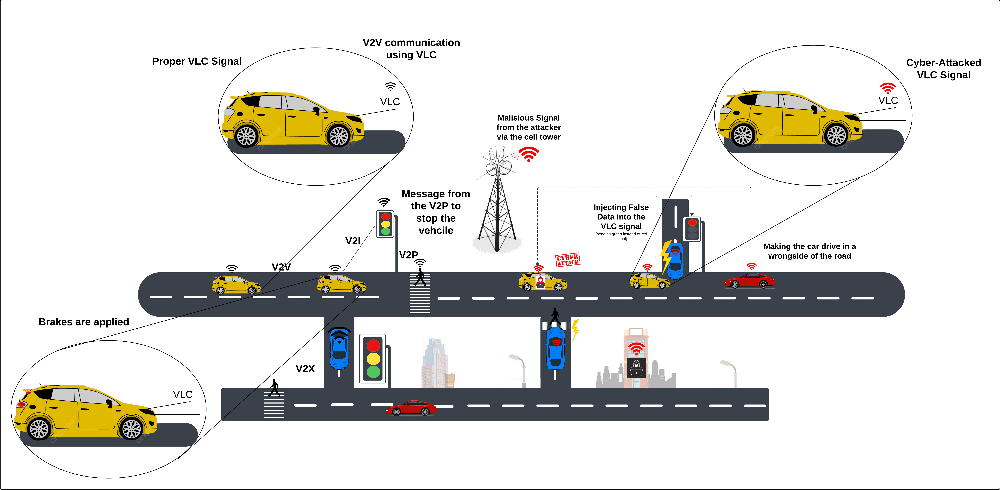
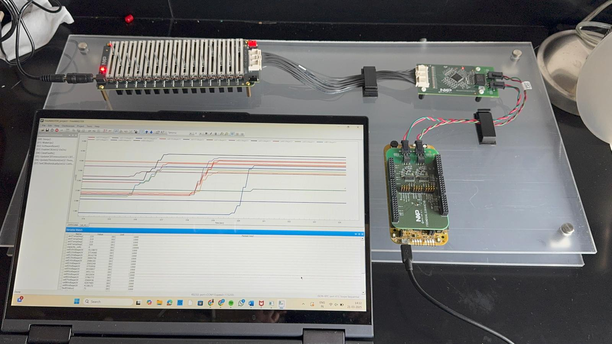

Hybrid V2X Communication
This research combines Visible Light Communication (VLC) and Cellular-V2X (C-V2X) to create a resilient hybrid communication framework for connected vehicles. The system leverages VLC for short-range, high-precision line-of-sight communication and C-V2X for long-range, non-line-of-sight scenarios. We examined its cybersecurity resilience under spoofing, signal manipulation, and jamming attacks while assessing its performance in adverse conditions.
- Designed a dual-channel architecture using VLC and C-V2X for complementary communication robustness.
- Investigated spoofing, ambient light interference, and signal injection vulnerabilities in hybrid V2X systems.
- Simulated hybrid V2X response under varying weather and lighting to evaluate latency and error tolerance.
- Publication in progress for IEEE Transactions on IoT, supervised by Prof. Xin Xia.

Illustration of V2X system under proper and cyber-attacked VLC signals
.png)
Comparison of attack impact on signal misinterpretation, communication loss, and safety metrics
Battery Management Cybersecurity
Threat modeling and testbench development using NXP emulator, published in IEEE Access 2025.
- Designed and implemented a BMS testbench using NXP’s BATT-14 emulator, MC33664 transceiver, and S32K144EVB board to emulate real-world battery cell conditions.
- Conducted threat modeling and vulnerability analysis targeting key attack vectors in BMS including SoC spoofing, voltage tampering, and DoS attacks on CAN-based networks.
- Developed a custom PCB for monitoring voltage, current, and temperature parameters, improving fault detection and reducing troubleshooting time during cyberattack simulations.
- Analyzed raw battery telemetry data in Jupyter Notebook to detect anomalies and validate a “battery cell confidence” metric for resilience against spoofed signals.
- Achieved a projected 25% error reduction in BMS cybersecurity vulnerabilities and improved system diagnostic responsiveness.
- Research published as “Battery Management System: Threat Modeling, Vulnerability Analysis, and Cybersecurity Strategy” in IEEE Access. [Read Paper]

Final BMS testbench used for emulation and cybersecurity testing using NXP S32K144 and BATT-14 emulator.

Threat modeling wheel outlining cyberattack vectors targeting BMS sensors, networks, and integrity.